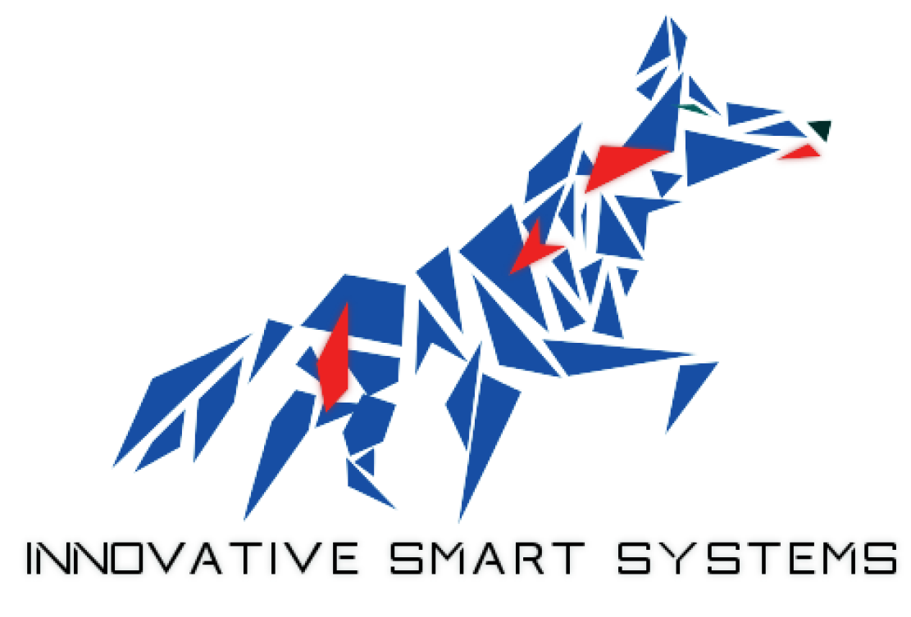

Overview - curriculum presentation
This portfolio is the main deliverable of the Innovative Smart Systems formation and will present all the works done this semester and the different skills acquired throughout all the courses. All those experiences will be presented in three ways :
And in this part, I will present my curriculum and all the courses I followed that are related to this training.
Name: Noize Alex Age: 22 Mail: noize@etud.insa-toulouse.fr
| Entitled | Organism | Year | Duration |
|---|---|---|---|
| Smart devices | INSA Toulouse | 2018-19 | 60.5 h |
| Sensors introduction | 11.25 h | ||
| Microcontroller and open-source hardware - MOSH | 27.5 h | ||
| Optical sensors | 7.5 h | ||
| CAD, manufacturing and integration of nano-technology sensors | 14 h | ||
| Communication | INSA Toulouse | 2018-19 | 63.75 h |
| Protocols for connected objects | 33.25 h | ||
| Digtal wireless communications for connected objects | 5 h | ||
| Energy for connected objects (recovery,transfert) | 7.5 h | ||
| Security for network of connected objects | 7.5 h | ||
| Emerging networks (SDN,NGN) | 10.5 h | ||
| Middleware and Services | INSA Toulouse | 2018-19 | 62 h |
| Services architecture | 31 h | ||
| Middleware for Internet of Things | 14.75 h | ||
| Adaptability: cloud and autonomic management | 16.25 h | ||
| Analysis and Data processing, Profesionnal applications | INSA Toulouse | 2018-19 | 37.5 h |
| Software engineering | 6.25 h | ||
| Semantic data | 8 h | ||
| Big Data | 15 h | ||
| SPOC - Hackaton - Seminaries | 8.25 h | ||
| Innovative project | INSA Toulouse | 2018-19 | 80.75 h |
| Innovative project | 37.5 h | ||
| Portfolio | 8.25 h | ||
| English | 35 h | ||
| Innovation and Humanity | INSA Toulouse | 2018-19 | 95.5 h |
| Innovation - Social Acceptability - Business development | 20 h | ||
| Creativity methods - TRIZ method | 20.5 h | ||
| Team management | 20 h | ||
| Sport | 25 h | ||
| Individualized profesionnal development | 10 h | ||
| Network and Software engineering | INSA Toulouse | 2017-18 | 90.25 h |
| Network interconnection | 24.5 h | ||
| Real-time | 25 h | ||
| Object-oriented programming | 39.75 h | ||
| Energy Management for Embedded Systems | INSA Toulouse | 2017-18 | 42 h |
| Energy sources for embedded systems | 11.5 h | ||
| Power converters | 28.5 h | ||
| Discrete and Continuous System Optimization | INSA Toulouse | 2017-18 | 74.75 h |
| Graph theory | 26.25 h | ||
| Stochastic process - Petri net | 22.5 h | ||
| Optimal command | 20 h | ||
| Linear Control Design II | Technical University of Denmark | 2017-18 | 104 h |
| Design of Digital Systems | Technical University of Denmark | 2017-18 | 52 h |
| Computer Control Systems | Technical University of Denmark | 2017-18 | 52 h |
| Computer Hardware | INSA Toulouse | 2016-17 | 57.75 h |
| Assembly language | 40 h | ||
| Architecture | 17.75 h | ||
| C programming - Network - Database | INSA Toulouse | 2016-17 | 61.25 h |
| Database | 40.25 h | ||
| C | 10.5 h | ||
| Network | 10.5 h | ||
| Electronics and Signal | INSA Toulouse | 2016-17 | 77.75 h |
| Electronic development | 39.75 h | ||
| Random signals | 16.25 h | ||
| Digital filtering | 21.75 h |